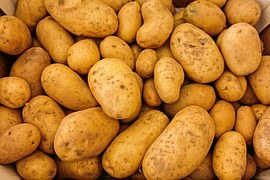
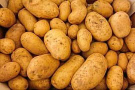

Zuurkool
Ingredienten voor 4 personen
-300 gram (wijn) zuurkool
-300 gram rundergehakt
-zout & peper
-150 gram gerapste kaas
-350 gram aardappelen
-boter
bereidingswijze
Schild de aardappelen en maak er een luchtige puree
van met boter ,melk en wat peper.Laat de zuurkool
in een vergiet, vermeng het dan met de zure room en leg
het in een met boter ingevette ovenschaal. Bak daarna het
gehakt rul(los geprakt) in een koekenpan samen met wat
peper en zout. leg het gehakt mengsel op het zuurkool mengsel
in de ovenschaal, strooi er dan wat geraspte kaas overheen.
En tot slot kom de aardappel puree.en met de rest van de
gerapte kaas.laat het dan 40 miuten in de oven staan.
 
